Tunes - pick a song out for your visit:
AC's playlist
🦋
🛀
🕸
📌
🌪
🏭
🗡
🐧
🔮
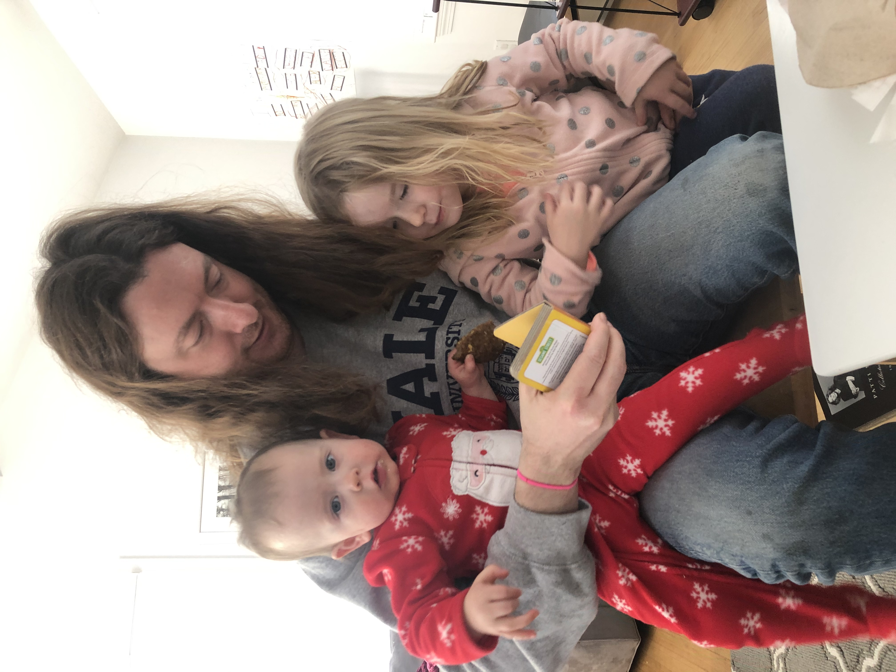
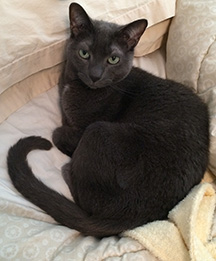
thinking about the ways in which type and image can relate
Dotgain Display: a typeface made by redrawing halftone images of letters.
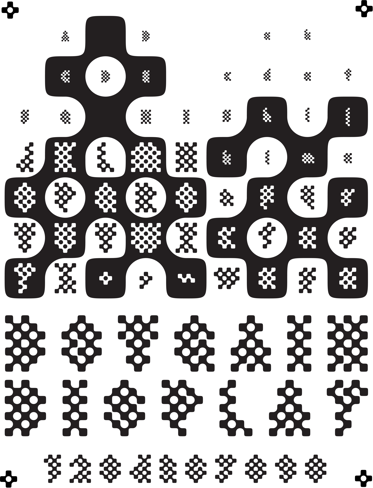A screen capture of a still in-process piece that allows one to draw on top of a text.
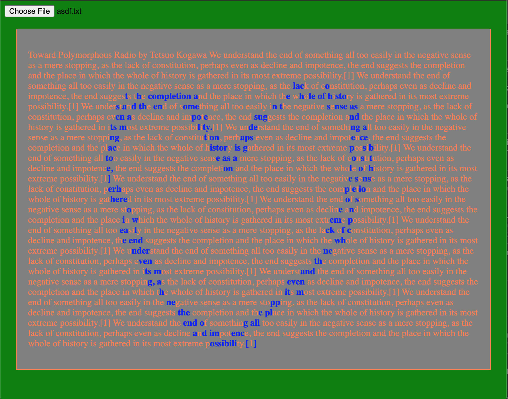type design
Globe Gothic revival:
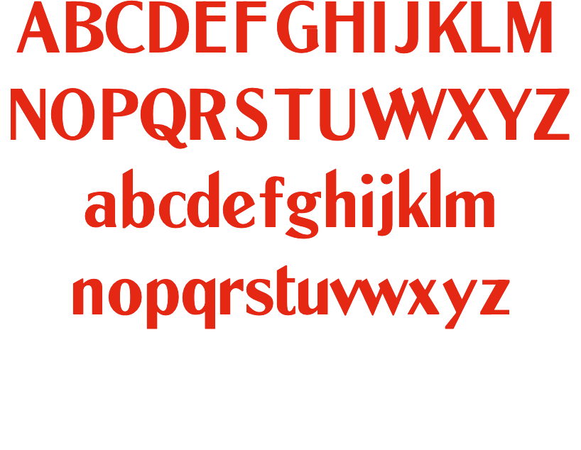
Haskell Script:
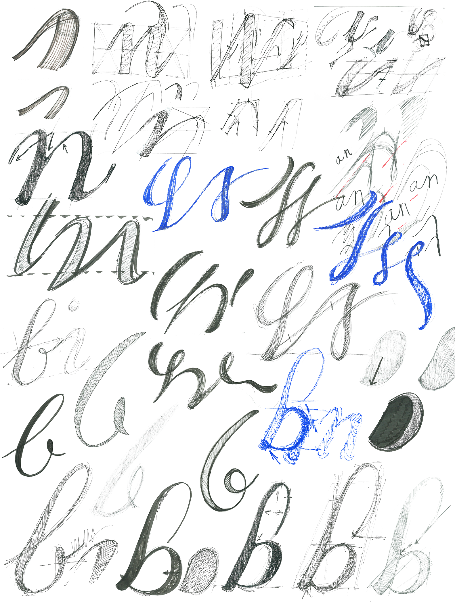 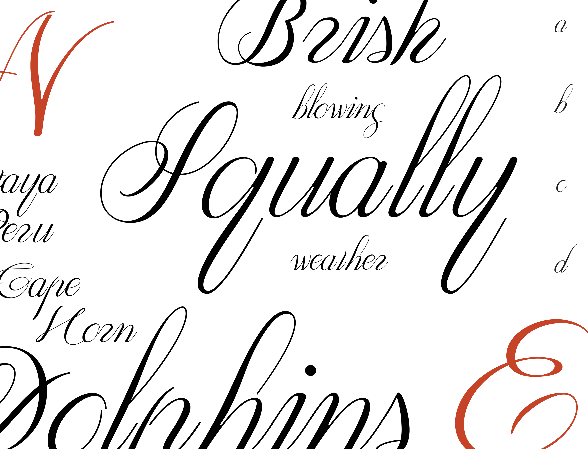Lugosi:

HTML commenting
?
Have you ever thought about how if you applied Rennaisance ideal proportions to bodies that don't fit them, that they would be come like torture devices?
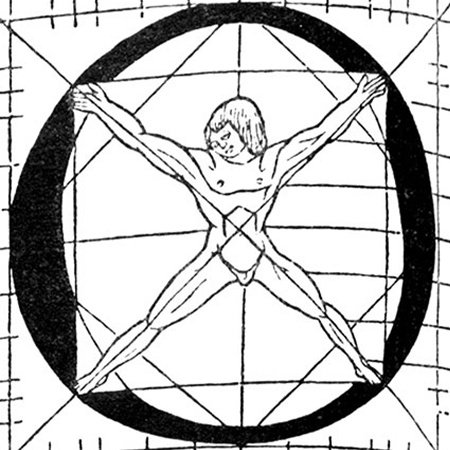 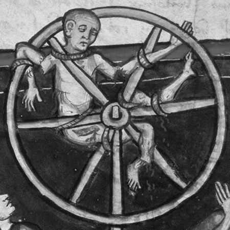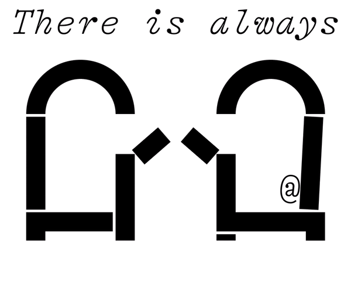
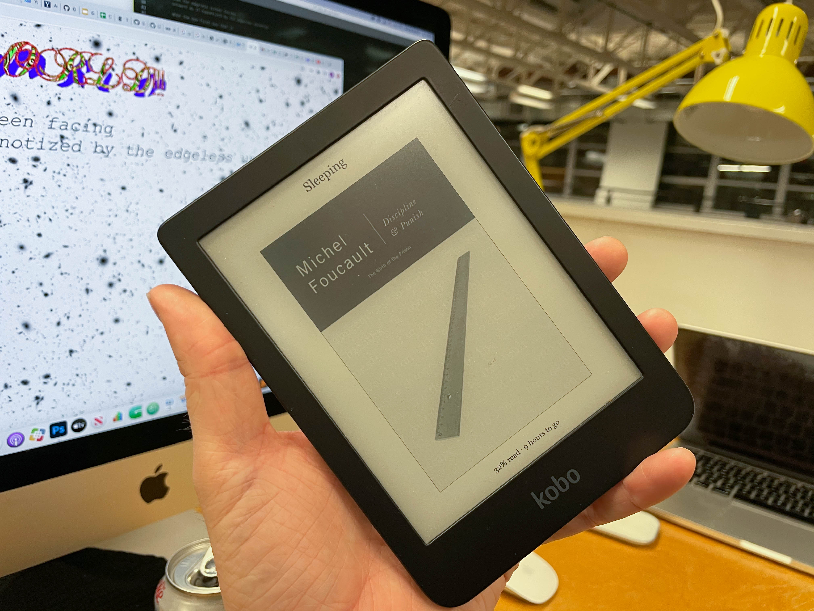
Beavertail point is one of my favorite places to spend time. If you ever go, I can tell you where the secret swimming spots are ;)